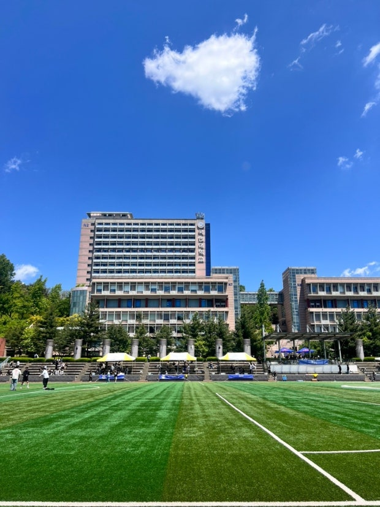

1학년 전공생부터 전과·복수전공을 고민하는 타전공생까지
개발 직군과 전공을 소개해드려요.

참여형 컨텐츠로 직군과 전공을 쉽게 이해하고, 선배들의 경험을 들어보세요.
개발 직군 문화, 분야별 역할, 전공 흥미 유발까지 한 번에 확인하세요.
쉬운 설문으로 나의 성향과 맞는 직군을 점수로 확인해보세요.
버그 잡기 게임으로 개발자 감각을 체험해보세요. 코딩 경험이 없어도 OK!
신입생부터 진로를 바꾸고 싶은 타전공생까지, 모두를 위해 만들었습니다.
각 직군 카드를 눌러 자세한 정보를 확인해보세요.
버튼 하나, 애니메이션 하나에 진심인 사람들.
디자인 감각과 코드를 동시에 다룹니다.
보이지 않는 곳에서 서비스를 지탱합니다.
논리적 구조 설계에 강한 사람이 어울립니다.
숫자와 패턴에서 의미를 발굴합니다.
수학적 사고와 분석을 즐기는 사람에게 맞습니다.
게임으로 가볍게 시작하거나, 진지하게 적성 설문을 해볼 수도 있어요.